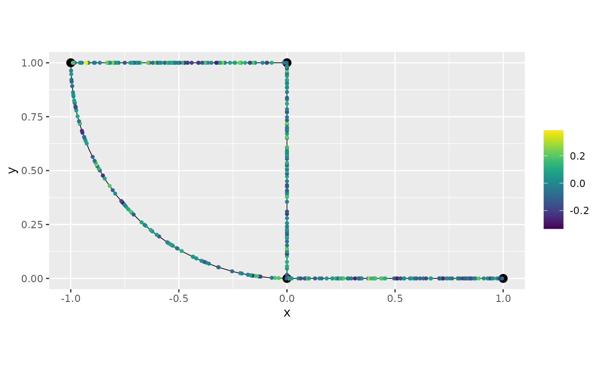
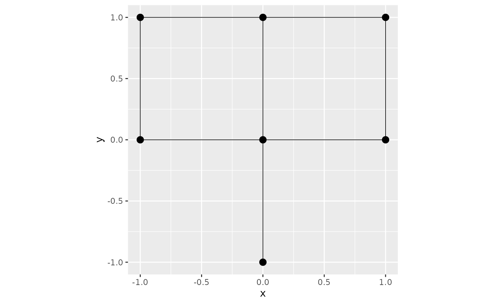
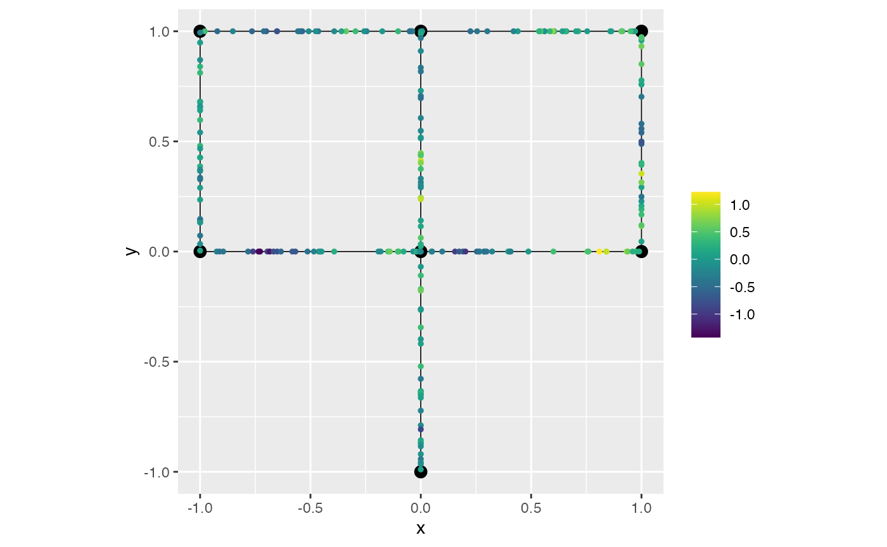
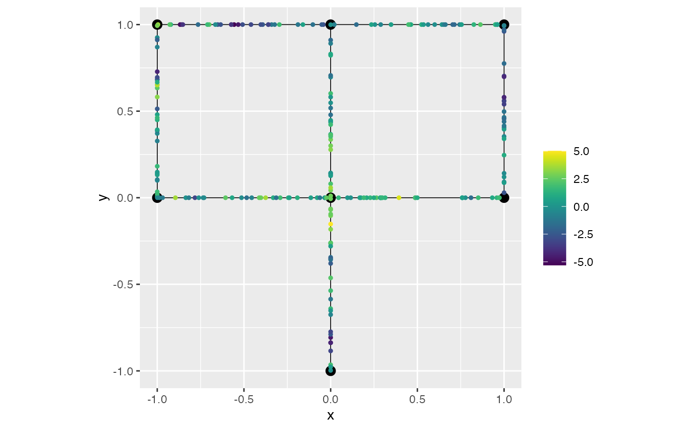
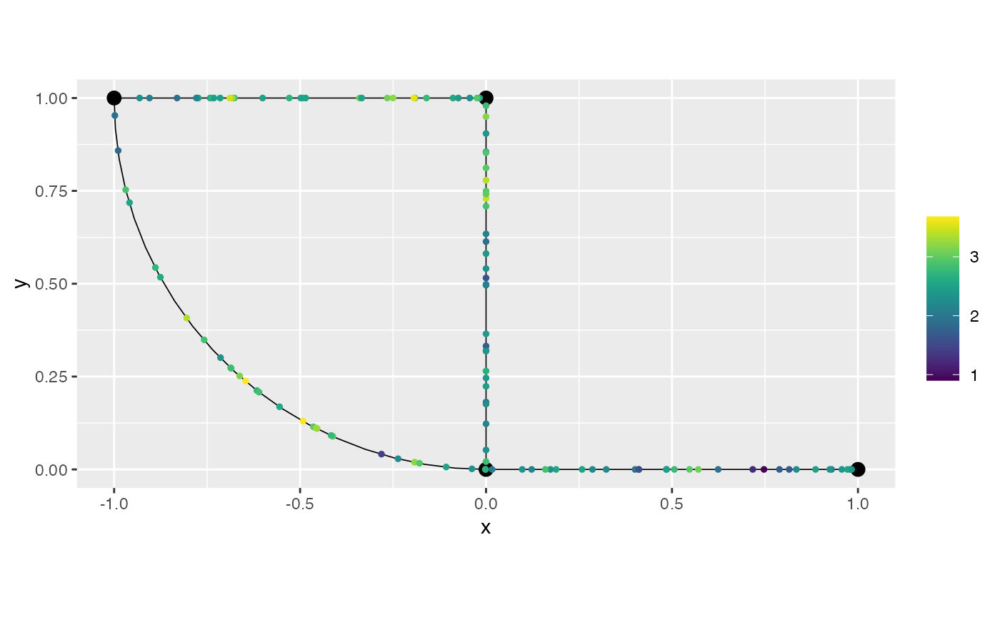

Gaussian random fields on metric graphs
David Bolin, Alexandre B. Simas, and Jonas Wallin
2023-05-09
Source:vignettes/random_fields.Rmd
random_fields.RmdIntroduction
In this vignette we will introduce how to work with Gaussian random fields on metric graphs. The main models are the Whittle–Matérn fields introduced in Bolin, Simas, and Wallin (2022) and Bolin, Simas, and Wallin (2023).
The package also has support for isotropic Gaussian processes, and in particular Gaussian processes with isotropic exponential covariance functions as introduced by Anderes, Møller, and Rasmussen (2020). Finally, Gaussian models based on the graph Laplacian, as introduced by Borovitskiy et al. (2021) are also supported, even though these do not defined Gaussian processes on the metric graph, but only at the vertices.
As an example throughout the vignette, we consider the following metric graph:
library(sp)
line1 <- Line(rbind(c(0,0),c(1,0)))
line2 <- Line(rbind(c(0,0),c(0,1)))
line3 <- Line(rbind(c(0,1),c(-1,1)))
theta <- seq(from=pi,to=3*pi/2,length.out = 20)
line4 <- Line(cbind(sin(theta),1+ cos(theta)))
Lines = sp::SpatialLines(list(Lines(list(line1),ID="1"),
Lines(list(line2),ID="2"),
Lines(list(line3),ID="3"),
Lines(list(line4),ID="4")))
graph <- metric_graph$new(lines = Lines)
graph$plot()
For further details on the construction of metric graphs, see Working with metric graphs
Whittle–Matérn fields
The Whittle–Matérn fields are specified as solutions to the stochastic differential equation \[ (\kappa^2 - \Delta)^{\alpha/2} \tau u = \mathcal{W} \] on the metric graph \(\Gamma\). We can work with these models without and approximations if the smoothness parameter \(\alpha\) is an integer, and this is what we focus on in this vignette. For details on the case of a general smoothness parameter, see Whittle–Matérn fields with general smoothness.
Sampling
As an example, let us simulate the field \(u\) on the graph using \(\alpha = 1\). To do so, we first need to specify where to sample it. As a first example, let us specify some locations manually:
PtE <- cbind(rep(1:4, each = 4),
rep(c(0.2, 0.4, 0.6, 0.8), times = 4))
sigma <- 2
alpha <- 1
kappa <- 5
u <- sample_spde(kappa = kappa, sigma = sigma, alpha = alpha,
graph = graph, PtE = PtE)
graph$plot(X = u, X_loc = PtE)
In many cases, one wants to sample the field at evenly spaced locations over the graph. To avoid having to specify such locations manually, we can first create a mesh on the graph
graph$build_mesh(h = 0.1)
graph$plot(mesh=TRUE)
In the command build_mesh, the argument h
decides the largest spacing between nodes in the mesh. We can now sample
the field on this mesh and plot the result as a function as follows:
u <- sample_spde(kappa = kappa, sigma = sigma, alpha = alpha,
graph = graph, type = "mesh")
graph$plot_function(u)
Let us construct a finer mesh, simulate the field, and visualize the
simulation in 3D by specifying the plotly argument in the
plot function:
graph$build_mesh(h = 0.01)
u <- sample_spde(kappa = kappa, sigma = sigma, alpha = alpha,
graph = graph, type = "mesh")
graph$plot_function(u, plotly = TRUE)## Loading required namespace: plotlySince \(\alpha=1\), these sample paths are continuous but not differentiable. To visualize the correlation structure of the field, we can compute and plot the covariances between some point and all other points in the graph as follows:
C <- covariance_alpha1_mesh(c(2, 0.2), kappa = kappa, sigma = sigma,
graph = graph)
graph$plot_function(C, plotly = TRUE)To obtain a field with differentiable sample paths, we can change to \(\alpha=2\). The corresponding covariance function then looks as follows:
C <- covariance_alpha2_mesh(c(2, 0.2), kappa = kappa, sigma = sigma,
graph = graph)
graph$plot_function(C, plotly = TRUE)Let us simulate a process with \(\alpha=2\) as well:
u <- sample_spde(kappa = kappa, sigma = sigma, alpha = 2,
graph = graph, type = "mesh")
graph$plot_function(u, plotly = TRUE)Inference
Mostly for illustration purposes, the MetricGraph
package contains implementations of likelihoods for Whittle–Matérn
fields observed under Gaussian measurement noise. In this section we
will illustrate these methods. For the use of the Whittle–Matérn fields
in more complicated hierarchical models, we recommend using the
interfaces to the INLA and inlabru packages.
See INLA interface of Whittle–Matérn
fields and inlabru interface of
Whittle–Matérn fields for further details on these.
Suppose that we want to estimate the model parameters of a Whittle–Matérn field \(u(s)\) observed under Gaussian measurement noise. That is, we assume that we are given observations \[ y_i = u(s_i) + \varepsilon_i, \quad i=1,\ldots,n \] where \(s_i\in \Gamma\) are observation locations and \(\varepsilon_i\) are independent centered Gaussian variables \(N(0,\sigma_e^2)\) representing measurement noise.
Let us start by generating some data like this and adding it to the metric graph:
kappa <- 10
sigma <- 2
sigma_e <- 0.1
alpha <- 1
n.obs.per.edge <- 75
PtE <- NULL
for(i in 1:graph$nE){
#add locations sampled at random to each edge
PtE <- rbind(PtE, cbind(rep(i, n.obs.per.edge), runif(n.obs.per.edge)))
}
u <- sample_spde(kappa = kappa, sigma = sigma, alpha = alpha,
graph = graph, PtE = PtE)
y <- u + sigma_e*rnorm(n.obs.per.edge * graph$nE)
df_data <- data.frame(y = y, edge_number = PtE[,1],
distance_on_edge = PtE[,2])
graph$clear_observations() # Removing previous observations
graph$add_observations(data = df_data, normalized = TRUE)
graph$plot(data = "y")
We can now use the graph_lme() function to fit the above
model. By default a linear regression model is chosen. Since we want to
fit a model with a latent model given by a Whittle-Mat'ern field with
\(\alpha=1\), we should set the
model argument to either 'alpha1' or to
list(model = 'WhittleMatern', alpha = 1) (the first is more
convenient but less decriptive). We will choose
parameterization_latent as "spde" to obtain
the estimated values for kappa and sigma. By
default it provides estimated values for the range parameter and
sigma.
res <- graph_lme(y ~ -1, graph = graph, model = 'alpha1', parameterization_latent = "spde")
summary(res)##
## Latent model - Whittle-Matern with alpha = 1
##
## Call:
## graph_lme(formula = y ~ -1, graph = graph, model = "alpha1",
## parameterization_latent = "spde")##
## No fixed effects.##
## Random effects:
## Estimate Std.error z-value
## sigma 2.02657 0.08085 25.07
## kappa 8.30549 0.27718 29.96
##
## Measurement error:
## Estimate Std.error z-value
## std. dev 0.1094 0.1067 1.025
## ---
## Signif. codes: 0 '***' 0.001 '**' 0.01 '*' 0.05 '.' 0.1 ' ' 1
##
## Log-Likelihood: 0.0202336
## Number of function calls by 'optim' = 16Let us now compare with the true values:
sigma_e_est <- res$coeff$measurement_error
sigma_est <- res$coeff$random_effects[1]
kappa_est <- res$coeff$random_effects[2]
results <- data.frame(sigma_e = c(sigma_e, sigma_e_est),
sigma = c(sigma, sigma_est),
kappa = c(kappa, kappa_est),
row.names = c("Truth", "Estimate"))
print(results)## sigma_e sigma kappa
## Truth 0.1000000 2.000000 10.000000
## Estimate 0.1093694 2.026569 8.305487Given these estimated parameters, we can now do kriging to estimate the field at locations in the graph. As an example, we now estimate the field on the regular mesh that we previously constructed.
u_est <- predict(res, data.frame(edge_number = graph$mesh$VtE[,1],
distance_on_edge = graph$mesh$VtE[,2]), normalized = TRUE)
graph$plot_function(u_est$mean, plotly = TRUE)The same procedure can be done with \(\alpha = 2\). One can also estimate \(\alpha\) from data as described in the vignette Whittle–Matérn fields with general smoothness.
Isotropic Gaussian processes
For metric graphs with Euclidean edges, Anderes, Møller, and Rasmussen (2020) showed
that one can define valid Gaussian processes through various isotropic
covariance functions if the distances between points are measured in the
so-called resistance metric \(d(\cdot,\cdot)\). One example of a valid
covariance function is the isotropic exponential covariance function
\[
r(d(s,t)) = \sigma^2\exp(-\kappa d(s,t)).
\] To use this, or any other valid covariance, on a metric graph,
the only cumbersome thing is to compute the metric. The
metric_graph class has built in support for this, which we
now illustrate.
Suppose that we want to sample a Gaussian process with an exponential covariance on a the mesh in the graph that we considered above. For this, we need to compute the resistance metric between the mesh locations, which can be done as follows:
graph$compute_resdist_mesh()We can now construct the covariance matrix for the process:
sigma <- 1
kappa <- 5
Sigma <- sigma^2*exp(-kappa*graph$mesh$res_dist)
graph$plot_function(Sigma[20,], plotly = TRUE)One can note that this covariance function looks quite similar to that of the Whittle–Mat'ern fields with \(\alpha = 1\). Let us plot the corresponding Whittle–Mat'ern covariance to compare:
P <- c(1, graph$mesh$V[20,1])
C.wm <- covariance_alpha1_mesh(P,kappa, sigma, graph, scale = TRUE)
p <- graph$plot_function(Sigma[20,], plotly = TRUE)
graph$plot_function(C.wm, plotly = TRUE, p = p, line_color = 'rgb(100,0,0)',
support_width = 0)Because of the similarities between these two covairance functions, we recomend using the Whittle–Matérn since it has Markov properties which makes inference much faster if that is used. Further, that covariance is well-defined for any compact metric graph, whereas the isotropic exponential is only guaranteed to be positive definite if the graph has Euclidean edges. See Bolin, Simas, and Wallin (2023) for further comparisons.
However, let us now illustrate how we can fit this covariance to data. We first clear the observations that were previously added to the graph, then simulate observation locations as above, sample the processes at these locations, and finally construct the data to add to the metric graph:
graph$clear_observations()
sigma <-1.5
kappa <- 20
sigma_e <- 0.1
n.obs.per.edge <- 50
PtE <- NULL
for(i in 1:graph$nE){
PtE <- rbind(PtE, cbind(rep(i, n.obs.per.edge), runif(n.obs.per.edge)))
}
D <- graph$compute_resdist_PtE(PtE, normalized = TRUE)
# Sigma <- sigma^2*exp(-kappa*D)
Sigma <- as.matrix(exp_covariance(D, c(sigma, kappa)))
u <- t(chol(Matrix::forceSymmetric(Sigma)))%*%rnorm(n.obs.per.edge * graph$nE)
y <- u + sigma_e*rnorm(n.obs.per.edge * graph$nE)
df_isocov <- data.frame(y = as.vector(y), edge_number = PtE[,1],
distance_on_edge = PtE[,2])
graph$add_observations(data = df_isocov, normalized=TRUE)
graph$plot(data = "y")We can now fit the model with the graph_lme() function.
We need the model to list(type="isoCov"), by default the
exponential covariance will be used.
##
## Latent model - Covariance-based model
##
## Call:
## graph_lme(formula = y ~ -1, graph = graph, model = list(type = "isoCov"))##
## No fixed effects.##
## Random effects:
## Estimate Std.error z-value
## sigma 1.41502 0.07689 18.4
## kappa 25.80468 0.21231 121.5
##
## Measurement error:
## Estimate Std.error z-value
## std. dev 0.1503 0.5594 0.269
## ---
## Signif. codes: 0 '***' 0.001 '**' 0.01 '*' 0.05 '.' 0.1 ' ' 1
##
## Log-Likelihood: -268.2396
## Number of function calls by 'optim' = 20
sigma_e_est <- res_exp$coeff$measurement_error
sigma_est <- res_exp$coeff$random_effects[1]
kappa_est <- res_exp$coeff$random_effects[2]
results <- data.frame(sigma_e = c(sigma_e, sigma_e_est),
sigma = c(sigma, sigma_est),
kappa = c(kappa, kappa_est),
row.names = c("Truth", "Estimate"))
print(results)## sigma_e sigma kappa
## Truth 0.1000000 1.500000 20.00000
## Estimate 0.1502698 1.415023 25.80468Let us now compute the posterior mean for the field at the observation locations:
u_est_exp <- predict(res_exp, df_isocov, normalized = TRUE)
graph$plot(X = u_est_exp$mean, X_loc = PtE)
Models based on the Graph Laplacian
A final set of Gaussian models that is supported by
MetricGraph is the Matérn type processes based on the graph
Laplacian introduced by Borovitskiy et al. (2021). These are
multivariate Gaussian distributions, which are defined in the vertices
through the equation \[
(\kappa^2\mathbf{I} - \mathbf{\Delta}_\Gamma)^{\alpha/2}\mathbf{u} =
\mathbf{W}
\] Here \(\mathbf{W}\sim
N(0,\sigma^2\mathbf{I})\) is a vector with independent Gaussian
variables and \(\mathbf{\Delta}_\Gamma\) is the graph
Laplacian. Further, \(\mathbf{u}\) is a
vector with the values of the process in the vertices of \(\Gamma\), which by definition has precision
matrix \[
\mathbf{Q} = \sigma^{-2}(\kappa^2\mathbf{I} -
\mathbf{\Delta}_\Gamma)^{\alpha}
\] Thus, to define these models, the only
`difficult'' thing is to compute the graph Laplacian. The (weighted) graph Laplacian, where the weights are specified by the edge lengths can be computed by the functioncompute_laplacian()in themetric_graph`
object. We first generate some random locations, and then we compute the
Laplacian on these locations:
n.obs.per.edge <- 100
PtE <- NULL
for(i in 1:graph$nE){
PtE <- rbind(PtE, cbind(rep(i, n.obs.per.edge), sort(runif(n.obs.per.edge))))
}
## Removing problematic locations (locations very close) to improve numerical stability
prob_points <- which(abs(diff(PtE[,2])) < 1e-3)
prob_points <- c(prob_points, which(PtE[,2] < 1e-3))
prob_points <- c(prob_points, which(PtE[,2] > 1 - 1e-3))
PtE <- PtE[!(1:nrow(PtE)%in%prob_points),]
GL <- graph$compute_laplacian_PtE(PtE = PtE, normalized = TRUE)Let us now generate the data for a graph Laplacian model with \(\alpha=1\):
library(Matrix)
sigma <- 1
kappa <- 10
sigma_e <- 0.1
Q <- (kappa^2 * Diagonal(nrow(GL)) + GL) / sigma^2
LQ <- chol(forceSymmetric(Q))
u <- solve(LQ, rnorm(nrow(Q)))[(attr(GL, "nV_idx") + 1):nrow(GL)] # The first attr(GL, "nV_idx") values are on the original vertices
y <- u + sigma_e*rnorm(length(u))
df_GL <- data.frame(y = as.vector(y), edge_number = PtE[,1],
distance_on_edge = PtE[,2])
graph$clear_observations()
graph$add_observations(data = df_GL, normalized=TRUE)
graph$plot(data = "y")
We can then fit the model to data similarly to how we fit the
previous models, with the help of the function
graph_lme():
res_GL <- graph_lme(y ~ -1, graph = graph, model = list(type = "graphLaplacian"))
sigma_e_est <- res_GL$coeff$measurement_error
sigma_est <- res_GL$coeff$random_effects[1]
kappa_est <- res_GL$coeff$random_effects[2]
results <- data.frame(sigma_e = c(sigma_e, sigma_e_est),
sigma = c(sigma, sigma_est),
kappa = c(kappa, kappa_est),
row.names = c("Truth", "Estimate"))
print(results)## sigma_e sigma kappa
## Truth 0.1000000 1.0000000 10.000000
## Estimate 0.1125888 0.7742865 7.342173A comparison using cross-validation
Let us now compare the different models in terms of predictive ability. We start by simulating some data frome a Whittle–Matérn field with \(\alpha = 2\), fit all different models that we have discussed, and then compare their predictive ability through leave-one-out crossvalidation. To change things up a bit, let us consider a different graph:
V <- rbind(c(0, 0),
c(1, 0),
c(1, 1),
c(0, 1),
c(-1, 1),
c(-1, 0),
c(0, -1))
E <- rbind(c(1, 2),
c(2, 3),
c(3, 4),
c(4, 5),
c(5, 6),
c(6, 1),
c(4, 1),
c(1, 7))
graph <- metric_graph$new(V = V, E = E)
graph$plot()
Let us now generate some observation locations at random locations on each edge and sample the process:
kappa <- 10
sigma <- 20
sigma_e <- 0.1
theta <- c(sigma_e, sigma, kappa)
n.obs.per.edge <- 30
PtE <- NULL
for(i in 1:graph$nE){
#add locations sampled at random to each edge
PtE <- rbind(PtE, cbind(rep(i, n.obs.per.edge), runif(n.obs.per.edge)))
}
u <- sample_spde(kappa = kappa, sigma = sigma, alpha = 1,
graph = graph, PtE = PtE, method = "Q")
y <- u + sigma_e*rnorm(n.obs.per.edge * graph$nE)
df_cv <- data.frame(y = y, edge_number = PtE[,1],
distance_on_edge = PtE[,2])
graph$add_observations(data=df_cv, normalized = TRUE)
graph$plot(data = TRUE)
We now fit the different models to this data:
#alpha = 1 model
fit_alpha1 <- graph_lme(y ~ -1, graph=graph, model = list(type = "WhittleMatern", alpha = 1))
#alpha = 2 model
fit_alpha2 <- graph_lme(y ~ -1, graph=graph, model = list(type = "WhittleMatern", alpha = 2))
#Isotropic exponential
fit_isoexp <- graph_lme(y ~ -1, graph=graph, model = list(type = "isoCov"))
#Graph Laplacian
fit_GL1 <- graph_lme(y ~ -1, graph=graph, model = list(type = "graphLaplacian", alpha = 1))
fit_GL2 <- graph_lme(y ~ -1, graph=graph, model = list(type = "graphLaplacian", alpha = 2))Finally, we use the function posterior_crossvalidation
to perform leave-one-out cross validation based on the estimated
parameters and compare the results:
cv.alpha1 <- posterior_crossvalidation(fit_alpha1)
cv.alpha2 <- posterior_crossvalidation(fit_alpha2)
cv.exp <- posterior_crossvalidation(fit_isoexp)
cv.GL1 <- posterior_crossvalidation(fit_GL1)
cv.GL2 <- posterior_crossvalidation(fit_GL2)
results <- data.frame(rmse = c(cv.alpha1$rmse, cv.alpha2$rmse, cv.exp$rmse,
cv.GL1$rmse, cv.GL2$rmse),
mae = c(cv.alpha1$mae, cv.alpha2$mae, cv.exp$mae,
cv.GL1$mae, cv.GL2$mae),
crps = c(cv.alpha1$crps, cv.alpha2$crps, cv.exp$crps,
cv.GL1$crps, cv.GL2$crps),
scrps = c(cv.alpha1$scrps, cv.alpha2$scrps, cv.exp$scrps,
cv.GL1$scrps, cv.GL2$scrps),
logscore = c(cv.alpha1$logscore, cv.alpha2$logscore,
cv.exp$logscore, cv.GL1$logscore,
cv.GL2$logscore),
row.names = c("alpha=1", "alpha=2", "isoExp",
"GL1", "GL2"))
round(1000*results)## rmse mae crps scrps logscore
## alpha=1 2236 1610 1146 1350 2007
## alpha=2 2368 1705 1215 1387 2075
## isoExp 2237 1612 1147 1350 2007
## GL1 2235 1614 1146 1350 2007
## GL2 2301 1664 1180 1373 2048
cv.alpha1 <- posterior_crossvalidation_covariance(fit_alpha1)
cv.alpha2 <- posterior_crossvalidation_covariance(fit_alpha2)
cv.exp <- posterior_crossvalidation_covariance(fit_isoexp)
cv.GL1 <- posterior_crossvalidation_covariance(fit_GL1)
cv.GL2 <- posterior_crossvalidation_covariance(fit_GL2)
results <- data.frame(rmse = c(cv.alpha1$rmse, cv.alpha2$rmse, cv.exp$rmse,
cv.GL1$rmse, cv.GL2$rmse),
mae = c(cv.alpha1$mae, cv.alpha2$mae, cv.exp$mae,
cv.GL1$mae, cv.GL2$mae),
crps = c(cv.alpha1$crps, cv.alpha2$crps, cv.exp$crps,
cv.GL1$crps, cv.GL2$crps),
scrps = c(cv.alpha1$scrps, cv.alpha2$scrps, cv.exp$scrps,
cv.GL1$scrps, cv.GL2$scrps),
logscore = c(cv.alpha1$logscore, cv.alpha2$logscore,
cv.exp$logscore, cv.GL1$logscore,
cv.GL2$logscore),
row.names = c("alpha=1", "alpha=2", "isoExp",
"GL1", "GL2"))
round(1000*results)## rmse mae crps scrps logscore
## alpha=1 2236 1610 1146 1350 2007
## alpha=2 2368 1705 1215 1387 2075
## isoExp 2237 1612 1147 1350 2007
## GL1 2235 1614 1146 1350 2007
## GL2 2301 1664 1180 1373 2048A model with replicates
Let us illustrate now how one can fit a model with replicates. To this end, we will consider the same graph from the previous example.
V <- rbind(c(0, 0),
c(1, 0),
c(1, 1),
c(0, 1),
c(-1, 1),
c(-1, 0),
c(0, -1))
E <- rbind(c(1, 2),
c(2, 3),
c(3, 4),
c(4, 5),
c(5, 6),
c(6, 1),
c(4, 1),
c(1, 7))
graph <- metric_graph$new(V = V, E = E)
graph$plot()
Let us now generate some observation locations at random locations on
each edge and sample the process. Let us sample from a Whitlle–Matérn
process on the metric graph with alpha=1. We will consider
20 replicates. To this end, we will set nsim=20:
library(tidyr)
kappa <- 10
sigma <- 2
sigma_e <- 0.1
theta <- c(sigma_e, sigma, kappa)
n_repl <- 20
n.obs.per.edge <- 30
PtE <- NULL
for(i in 1:graph$nE){
#add locations sampled at random to each edge
PtE <- rbind(PtE, cbind(rep(i, n.obs.per.edge), runif(n.obs.per.edge)))
}
u <- sample_spde(kappa = kappa, sigma = sigma, alpha = 1,
graph = graph, PtE = PtE, nsim = n_repl)
y <- u + sigma_e*matrix(rnorm(n.obs.per.edge * graph$nE * n_repl), ncol = n_repl)
df_graph <- data.frame(y=y, edge_number = PtE[,1],
distance_on_edge = PtE[,2])
df_graph <- pivot_longer(df_graph, cols = `y.1`:`y.20`, names_to = "repl", values_to = "y")
graph$add_observations(data = df_graph, normalized = TRUE, group="repl")To plot the first replicate, we can simply call
graph$plot(data=TRUE). To plot another replicate, we set
the argument group to the index of the replicate we want to
plot. Let us plot the first and second replicates:
graph$plot(data="y")
graph$plot(data="y", group="y.2")
graph$plot(data="y", group=2)
To fit the model, we simply proceed in an identical manner as for the
case without replicates by using the graph_lme()
function:
fit_repl <- graph_lme(y ~ -1, graph = graph, model = "alpha1", parameterization = "spde")
sigma_e_est <- fit_repl$coeff$measurement_error
sigma_est <- fit_repl$coeff$random_effects[1]
kappa_est <- fit_repl$coeff$random_effects[2]
results <- data.frame(sigma_e = c(sigma_e, sigma_e_est),
sigma = c(sigma, sigma_est),
kappa = c(kappa, kappa_est),
row.names = c("Truth", "Estimate"))
print(results)## sigma_e sigma kappa
## Truth 0.10000000 2.00000 10.000000
## Estimate 0.09168163 2.02721 9.585252Let us now fit a model with isotropic exponential covariance on the same data:
fit_repl_isoexp <- graph_lme(y ~ -1, graph = graph,
model = list(type = "isoCov"))
summary(fit_repl_isoexp)##
## Latent model - Covariance-based model
##
## Call:
## graph_lme(formula = y ~ -1, graph = graph, model = list(type = "isoCov"))##
## No fixed effects.##
## Random effects:
## Estimate Std.error z-value
## sigma 0.46006 0.01995 23.06
## kappa 9.84006 0.05053 194.72
##
## Measurement error:
## Estimate Std.error z-value
## std. dev 0.09125 0.03523 2.59
## ---
## Signif. codes: 0 '***' 0.001 '**' 0.01 '*' 0.05 '.' 0.1 ' ' 1
##
## Log-Likelihood: -643.8905
## Number of function calls by 'optim' = 16To do kriging, we proceed in an identical way, by providing a
data.frame with the locations we want to obtain
predictions.
Let us obtain predictions for the observation locations. By setting
return_as_list to TRUE we obtain a list of
predictions, in which each element consists of predictions for the
corresponding replicate.
df_pred <- data.frame(edge_number = PtE[,1],
distance_on_edge = PtE[,2])
pred_alpha1 <- predict(fit_repl, data = df_pred, normalized = TRUE, return_as_list = TRUE)Let us now plot the predictions of the first replicate by using the number which indicates the order of the replicate:
graph$plot(X = pred_alpha1$mean[[1]], X_loc = df_pred)
We can also use the name of the replicate. Let us plot the
predictions for replicate y.15:
graph$plot(X = pred_alpha1$mean[["y.15"]], X_loc = df_pred)
A model with covariates
In this example we will consider the first graph:
line1 <- Line(rbind(c(0,0),c(1,0)))
line2 <- Line(rbind(c(0,0),c(0,1)))
line3 <- Line(rbind(c(0,1),c(-1,1)))
theta <- seq(from=pi,to=3*pi/2,length.out = 20)
line4 <- Line(cbind(sin(theta),1+ cos(theta)))
Lines = sp::SpatialLines(list(Lines(list(line1),ID="1"),
Lines(list(line2),ID="2"),
Lines(list(line3),ID="3"),
Lines(list(line4),ID="4")))
graph <- metric_graph$new(lines = Lines)
graph$plot()
Let us now generate some observation locations at random locations on
each edge and sample the process. Let us sample from a Whitlle–Matérn
process on the metric graph with alpha=1. We will include
an intercept and covariates. The covariates can be added as columns in
the data.frame passed to the
add_observations() function.
graph$clear_observations()
kappa <- 10
sigma <- 2
sigma_e <- 0.1
theta <- c(sigma_e, sigma, kappa)
n.obs.per.edge <- 75
PtE <- NULL
for(i in 1:graph$nE){
#add locations sampled at random to each edge
PtE <- rbind(PtE, cbind(rep(i, n.obs.per.edge), runif(n.obs.per.edge)))
}
u <- sample_spde(kappa = kappa, sigma = sigma, alpha = 1,
graph = graph, PtE = PtE)
beta <- c(2,1)
X_cov <- cbind(1, runif(nrow(PtE)))
y <- X_cov %*% beta + u + sigma_e*rnorm(n.obs.per.edge * graph$nE)
df_graph <- data.frame(y=y, x1 = X_cov[,2], edge_number = PtE[,1], distance_on_edge=PtE[,2])
graph$add_observations(data=df_graph, normalized = TRUE)Let us now estimate the parameters using the graph_lme()
function:
fit_cov <- graph_lme(y ~ x1, graph = graph, model = "alpha1", parameterization_latent = "spde")
sigma_e_est <- fit_cov$coeff$measurement_error
sigma_est <- fit_cov$coeff$random_effects[1]
kappa_est <- fit_cov$coeff$random_effects[2]
beta_1_est <- fit_cov$coeff$fixed_effects[1]
beta_2_est <- fit_cov$coeff$fixed_effects[2]
results <- data.frame(sigma_e = c(sigma_e, sigma_e_est),
sigma = c(sigma, sigma_est),
kappa = c(kappa, kappa_est),
beta_1 = c(beta[1], beta_1_est),
beta_2 = c(beta[2], beta_2_est),
row.names = c("Truth", "Estimate"))
print(results)## sigma_e sigma kappa beta_1 beta_2
## Truth 0.1000000 2.000000 10.0000 2.000000 1.000000
## Estimate 0.1075077 2.008536 14.0151 2.041946 1.004646To do kriging, we can use the predict() method together
with a data.frame containing the locations and the
covariates at the locations we want to obtain the predictions. Let us
obtain predictions for the observation locations:
pred_cov <- predict(fit_cov, data = df_graph, normalized = TRUE)Let us now plot the predictions of the first replicate by using the number which indicates the order of the replicate:
graph$plot(X = pred_cov$mean, X_loc = df_graph[,3:4])
A model with covariates and replicates
Let us consider the same graph from the previous example:
line1 <- Line(rbind(c(0,0),c(1,0)))
line2 <- Line(rbind(c(0,0),c(0,1)))
line3 <- Line(rbind(c(0,1),c(-1,1)))
theta <- seq(from=pi,to=3*pi/2,length.out = 20)
line4 <- Line(cbind(sin(theta),1+ cos(theta)))
Lines = sp::SpatialLines(list(Lines(list(line1),ID="1"),
Lines(list(line2),ID="2"),
Lines(list(line3),ID="3"),
Lines(list(line4),ID="4")))
graph <- metric_graph$new(lines = Lines)
graph$plot()
Let us now generate some observation locations at random locations on
each edge and sample the process. Let us sample from a Whitlle–Matérn
process on the metric graph with alpha=1 and 20 replicates.
We will include an intercept and covariates. The covariates can be added
in the data.frame passed to the
add_observations() function.
kappa <- 10
sigma <- 2
sigma_e <- 0.1
theta <- c(sigma_e, sigma, kappa)
n.obs.per.edge <- 30
n_repl <- 20
PtE <- NULL
for(i in 1:graph$nE){
#add locations sampled at random to each edge
PtE <- rbind(PtE, cbind(rep(i, n.obs.per.edge), runif(n.obs.per.edge)))
}
u <- sample_spde(kappa = kappa, sigma = sigma, alpha = 1,
graph = graph, PtE = PtE, nsim = n_repl)
beta <- c(2,1)
X_cov <- cbind(1, runif(nrow(PtE)))
y <- NULL
for(i in 1:n_repl){
y_tmp <- X_cov %*% beta + u[,i] + sigma_e*rnorm(n.obs.per.edge * graph$nE)
y <- cbind(y, y_tmp)
}
data_list <- lapply(1:n_repl, function(i){data.frame(y = y[,i], x1 = X_cov[,2],
edge_number = PtE[,1],
distance_on_edge = PtE[,2], repl = i)})
df_graph <- do.call(rbind, data_list)
graph$add_observations(data = df_graph, normalized = TRUE, group = "repl")Let us now estimate the parameters with the graph_lme()
function:
fit_cov_repl <- graph_lme(y ~ x1, graph = graph, model = "alpha1", parameterization_latent = "spde")
sigma_e_est <- fit_cov_repl$coeff$measurement_error
sigma_est <- fit_cov_repl$coeff$random_effects[1]
kappa_est <- fit_cov_repl$coeff$random_effects[2]
beta_1_est <- fit_cov_repl$coeff$fixed_effects[1]
beta_2_est <- fit_cov_repl$coeff$fixed_effects[2]
results <- data.frame(sigma_e = c(sigma_e, sigma_e_est),
sigma = c(sigma, sigma_est),
kappa = c(kappa, kappa_est),
beta_1 = c(beta[1], beta_1_est),
beta_2 = c(beta[2], beta_2_est),
row.names = c("Truth", "Estimate"))
print(results)## sigma_e sigma kappa beta_1 beta_2
## Truth 0.10000000 2.000000 10.0000 2.000000 1.000000
## Estimate 0.09545506 2.042443 10.8156 2.001322 1.021083Finally, we can do kriging in an analogous manner to the previous cases. Let us obtain predictions for the first replicate on the observation locations:
df_pred <- data.frame(edge_number = PtE[,1],
distance_on_edge = PtE[,2], x1 = X_cov[,2])
pred_cov_repl <- predict(fit_cov_repl, data = df_pred, normalized = TRUE, return_as_list = TRUE)Let us now plot the predictions of the first replicate by using the number which indicates the order of the replicate:
graph$plot(X = pred_cov_repl$mean[[1]], X_loc = df_pred[,1:2])